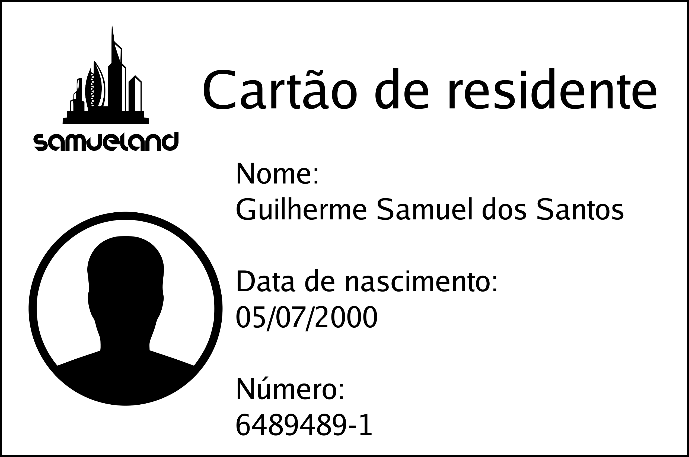

O Departamento de Samueland emite uma dica de ferramenta de vistos para estrangeiros
que viajam para os Samueland por meio de suas embaixadas ou consulados. No entanto,
você não precisa de visto para reuniões de negócios ou férias se for cidadão de qualquer
um dos 39 países participantes do Programa de Isenção de Visto.
O motivo da viagem determinará o tipo de visto de que você precisa para entrar em Samueland.
Alguns dos vistos mais comumente solicitados são:
Para ser cidadão de Samueland, precisa-se cumprir uma série de requesitos. Tornar-se cidadão por meio da naturalização é um processo em que um cidadão não samuelandês se torna voluntariamente um cidadão samuelandês. Cidadãos de Samueland:
Existe algumas formas de ter um Cartão de Residente Permanente que permite cinco anos de residência. Algumas das formas é comprar ou ganhar algum através de alguns sorteios anuais. Existe a opção de pedido como cônjuge de um cidadão samuelandês.
Inscreva-se para obter o status de refugiado de dentro de Samueland, descubra como vir para Samueland como refugiado, patrocinar um refugiado ou encontrar serviços para refugiados em Samueland.